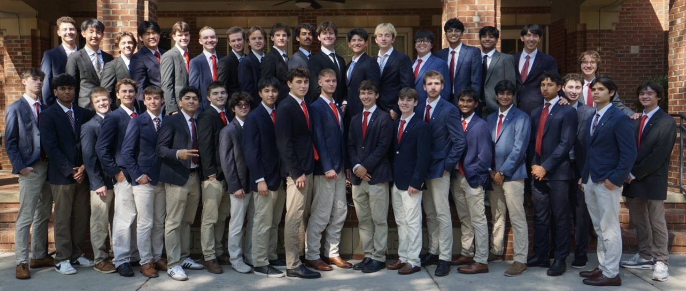

Affiliation · Assistant Rush Chair
Theta Chi
Leadership, outreach and team coordination outside the engineering classroom.
Recruitment and coordination
As Assistant Rush Chair, I help support chapter recruitment and outreach. The experience develops communication, event coordination and collaborative planning alongside my technical work.
